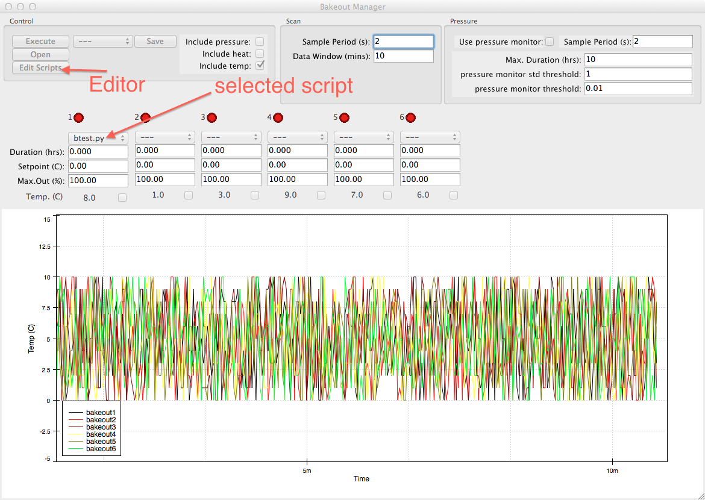
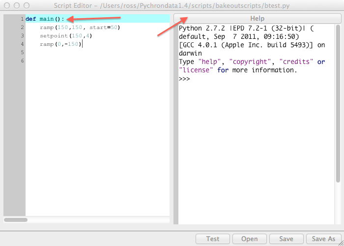

Bakeout Script
Here’s how to write a bakeoutscript
- launch BakeoutManager (Bo on the dock)
- open the script editor (Edit scripts button). An empty script is opened as a default
- use Open to open an existing script or just start writing one from scratch
- write your script. see below
- you may check the syntax of your script at any point by hitting Test. A dialog will pop up saying if there was a problem and what it was or if the script passed with no errors. The scripts syntax is also automatically checked before saving.
- Use save and save as in the normal manner. script files should end with .py . if the file ending is omitted a .py is appended automatically
- close the script editor
here is an example script:
#===========================================================================
#this is a comment in the script. use it at your leisure
#the following line def main(): is required and the entry point for the script
def main():
#this is the body of the main function
#it should be one tab in
ramp(150,100,start=45) # comments can go on the same line as functions
setpoint(150,4)
ramp(0,-150)
#end of script
#===========================================================================
Lets break it down line by line.
- A comment can be added anywhere using the # character
- def main(): defines a required function called “main” that will be executed when the script is run. The main function is necessary and is added to an empty script by default.
- the function ramp(150,100,start=45) sets the controller to 45 C, then increases the temperature setting to 150 C at a rate of 100 C/hr
- the function setpoint(150,4) sets the controller to a temperature of 150 C and holds it for 4 hours
- ramp(0,-100) decreases the temperature setting from the current temperature to 0 C at a rate of -100 C/hr.
- Notice that the start parameter of the ramp() function is optional. If omitted the controller’s current temperature is used as the starting point
To activate a script for a given controller use the drop down menu located above the Duration box
To execute the bakeout hit Execute. Stop to Stop.


API
-
ramp(setpoint, rate[, start=None, period=60])
ramp controller’s setpoint from start to setpoint at a rate of rate C\hr.
if start=None then the controller’s current temperature is used. period defines
seconds between setpoint updates. e.g. period=30 sets the controllers setpoint every 30 seconds
-
setpoint(temperature, duration)
set controller’s setpoint to temperature for duration hours
{kind=link}